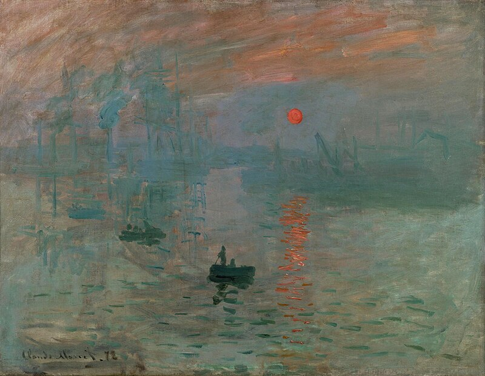

My Years at Shopee

In April 2019, I flew to Singapore a few days early.
I hadn't officially started yet and didn't know anyone. I found a short-term rental online and settled in. The landlord was a nice person, and we hit it off — that's how I met my first friend in Singapore.
The connections between people can be wonderfully serendipitous. Later, after I had found my footing at Shopee, I thought of him and sent him an internal referral link. Eventually, he also joined Shopee. You never know what a chance encounter might lead to.
After officially joining, I was assigned to an infrastructure-related team. When it comes to career development, I've always believed it's important to keep an open mind — when you encounter something unfamiliar, learn it; when you get a chance to work with a new system, study it carefully.
Over those years, thanks to my team, I got hands-on experience with many things I'd previously only read about in books. A scheduling system similar to K8s — I spent a long time understanding its design philosophy. A CDC system based on Binlog — that was the first time I truly understood how data flows between different systems. And then there was the in-house Service Mesh, a distributed job queue built on Kafka... each system embodied an entire design philosophy.
Whenever I had time, I'd read the docs and the code. I didn't always understand everything, but there's a difference between having looked at it and not. After leaving Shopee, I wrote mini versions of some of these systems in Go. Many things only truly become yours once you've built them yourself.
Technical growth was one side of things. But what truly opened my eyes during those years was something else.
Stock options.
I'd never heard of this concept before. Coming from the countryside, no one in my family understood it, and I'd never been exposed to it. When I first joined Shopee, I was a relative newcomer fresh out of school, and my package didn't include any stock. But many experienced colleagues were different — they came in with stock grants as part of their offers.
At the time, I didn't think much of it. Figured it was other people's business.
Then the pandemic hit.
In early 2020, the world was in chaos, but e-commerce actually boomed. Shopee's stock started rising — slowly at first, then surging. The pandemic seemed to pour fuel on the stock, and it burned hotter and hotter.
I heard that some colleagues' stock had multiplied 10x, 20x. Some people suddenly had millions on paper overnight. The atmosphere in the company shifted subtly — the lunch table conversations changed.
Honestly, I was envious. Watching others achieve financial freedom, it's impossible not to feel something.
But I told myself not to be resentful.
Just being at Shopee was already my good fortune. A graduate from a second-tier university, my first job paying 8,000 RMB, and now working at a tech company in Singapore — this was something I'd never imagined. As for those sky-high stock gains, that was other people's luck — they joined earlier, they had more experience, they caught the opportunity at the right time.
One shouldn't be too greedy. Take what's yours and be content.
During that time, I watched the people around me rise and fall, kept my head down, kept working, kept learning.
I watched them build their towers, watched them host their feasts.
But the high doesn't last forever.
Starting in 2022, the tide turned. The stock started falling — slowly at first, then in a cliff-dive. Much of that paper wealth vanished before many people could cash out.
The company started layoffs and reorgs. The atmosphere in the hallways grew tense, and before every all-hands meeting, everyone would speculate about which team would be hit next.
I'd actually been thinking that if I got laid off, I could take a severance package and find another job — Singapore's severance pay is quite decent. But it never happened, haha.
With no other choice, seeing things deteriorate, I transferred to Garena first. I thought switching teams might bring more stability and I could stay a bit longer.
But not long after, a message appeared on LinkedIn.
It was a recruiter, asking if I was interested in interviewing at Meta.
Of course I wanted to. Meta was a company I'd never dared to dream about before. But the problem was, I'd never done any LeetCode. I was completely unprepared for big tech interviews.
I honestly told the recruiter — could we start a bit later, maybe in a month? She said sure, no problem.
And just like that, I was thrown into the deep end.
For that month, I did LeetCode every day after work. Starting from zero — first Easy problems, then Medium, selectively doing Hards. It was painful at first — many problems I couldn't understand even after reading the solutions. But gradually, I found my groove.
By the end, I'd done about 300 problems, covering the classic problems of each category.
I'd always assumed big tech interviews would be mysterious, testing things you could never prepare for. Turns out that's not the case at all — if you grind the problems, you can actually solve them.
I'm quite grateful for this. The hiring process is open and transparent — what types of problems they test, what the process looks like, it's all clearly documented online. For people like me who aren't naturally brilliant, you don't need talent — just follow the steps and prepare.
On interview day, my palms were sweating from nerves, but the problems were all within range. Round after round, I somehow passed them all.
And just like that, a LinkedIn message serendipitously took me from Shopee to Meta.
What happened next, most people have probably heard about.
Not long after, things went south. The team I'd been on at Garena was later entirely laid off. If I hadn't left, I'd most likely have been caught in that wave. Former Shopee colleagues also gradually moved on — some went back to China, some joined other companies, some changed careers entirely.
Looking back at these past few years, it's been like a roller coaster. From a second-tier university graduate, to Singapore, to Shopee, to Meta. Along the way — the pandemic, stock prices skyrocketing then crashing, waves of layoffs. Sometimes I wonder: what if that recruiter hadn't messaged me? What if I'd missed that one-month window? Where would I be now?
But life has no what-ifs. We simply make the best choices we can at each crossroads.
As I said before, luck is what happens when preparation meets opportunity. Those years of reading books, writing code, maintaining curiosity — none of it was wasted. It was all waiting for the right moment.
I just happened to catch it.